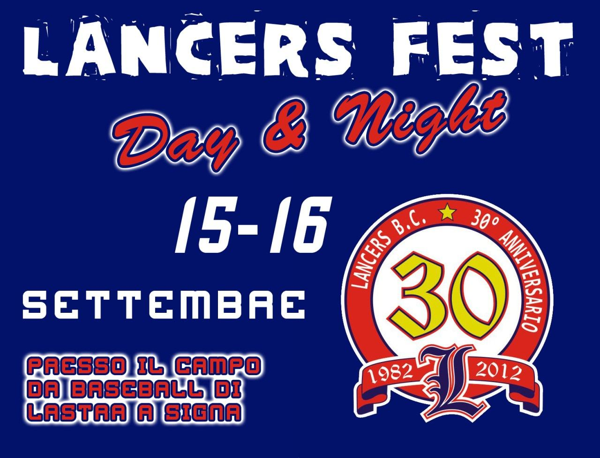

*** IL PROGRAMMA di Sabato 15 Settembre ***
– Ore 16.00 Attività ricreative di Baseball per i più piccoli e perché no, anche per i grandi
– Musica dal vivo con varie band e molto ancora per proseguire insieme la serata dalle ore 21
*** IL PROGRAMMA di Domenica 16 Settembre ***
– Ore 14.00 LANCERS B.C. – ALL STARS : Partita amichevole che coinvolgerà vecchi giocatori e attuali giocatori
– Ore 16.00 Campo libero per tutti i presenti, un lancio ed una battuta in compagnia
– Ore 17.30 Inizio premiazione per i personaggi più importanti della storia Lancers
– Ore 18.30 Aperitivo offerta dalla società Lancers BC
Durante i due giorni di festa sarà possibile avere la t-shirt celebrativa del 30° anniversario…non farti sfuggire questa occasione!
Invita i tuoi amici o vecchi compagni di squadra con i quali hai trascorso bei momenti di baseball.
L’evento si terrà presto il nostro campo di gioco in via Livornese a Lastra a Signa che dispone tra l’altro di un ampio parcheggio.
Per qualsiasi informazione non esitate a contattarci.
Vi aspettiamo numerosi!!!